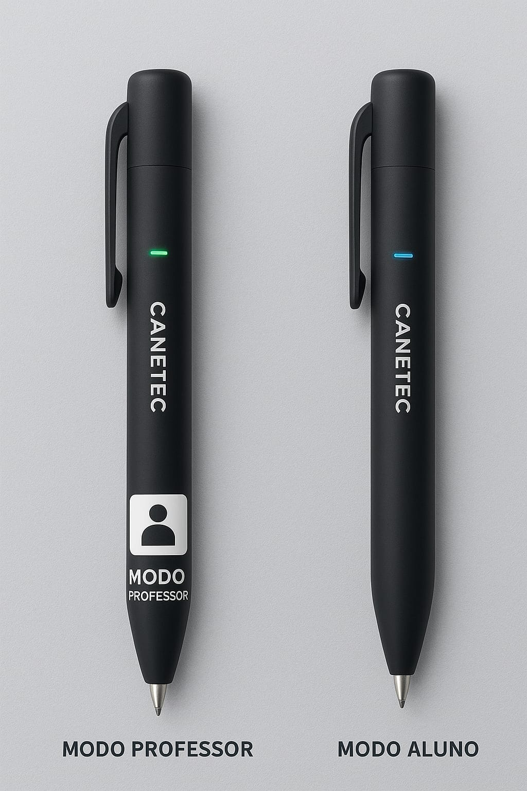

Empreendedorismo
Canetec
A caneta que ensina e aprende.
"A tecnologia que escreve o futuro do aprendizado."
Equipe
Francisco, Jhonatan, Rebecca, Matheus, Ludmilla,
Milena, Yan, Grazi, Amanda e Eduardo
Público-Alvo
Professores, estudantes e instituições de ensino que buscam unir
tecnologia, praticidade e inovação no processo educacional.
A Canetec é voltada especialmente para escolas que desejam
modernizar suas metodologias de ensino e para alunos que
buscam autonomia e reforço no aprendizado.
Descrição do Produto
A Canetec é uma caneta inteligente desenvolvida com inteligência
artificial e sensores de reconhecimento óptico.
-
Modo Professor: Lê questões, identifica erros e oferece
respostas automáticas. Permite registro de feedbacks personalizados.
-
Modo Aluno: Corrige atividades, explica os erros passo a
passo e fornece dicas de estudo, promovendo o aprendizado autônomo.
Recursos e Sustentabilidade
-
Aplicativo Móvel: Armazena histórico de uso,
acompanha o desempenho e oferece relatórios de evolução.
-
Ecológica: Produto recarregável, feito com
materiais sustentáveis, contribuindo para o meio ambiente.
Conheça a Canetec

Valores do Produto
Canetec - Modo Aluno
R$ 749,99
Canetec - Modo Professor
R$ 1.349,99
*Planos de assinatura do aplicativo podem ser aplicados.
Proposta de Valor
A Canetec transforma o ensino em uma experiência moderna, interativa
e acessível, otimizando o tempo de professores e facilitando o
estudo dos alunos.
Seu diferencial está em unir tecnologia, sustentabilidade e
educação, promovendo inclusão digital e estimulando o
pensamento crítico e criativo.
Modelo de Negócio
- Venda direta da caneta (escolas e consumidores).
- Parcerias com instituições de ensino e programas governamentais.
-
Assinatura mensal do aplicativo (conteúdos exclusivos,
atualizações e suporte).
Estratégias de Marketing
- Presença digital ativa (redes sociais, vídeos).
- Parcerias com professores influenciadores e escolas modelo.
- Campanhas em feiras educacionais e eventos tecnológicos.
- Programas de fidelização para escolas.
- Promoções em datas comemorativas (Ex: Dia do Professor).
Diferenciais
- Dois modos inteligentes (Professor e Aluno).
- Correção automática com explicações pedagógicas personalizadas.
- Design ergonômico e ecológico (materiais recicláveis).
- Integração com aplicativo para acompanhamento de desempenho.
- Possibilidade de uso em diversas disciplinas.
Impacto Esperado
- Aumento do engajamento e da motivação dos estudantes.
- Redução da sobrecarga de trabalho dos educadores.
- Democratização do acesso à tecnologia na educação.
- Desenvolvimento de uma cultura de aprendizado contínuo.
Obrigado!
Canetec
"A tecnologia que escreve o futuro do aprendizado."
❮
❯